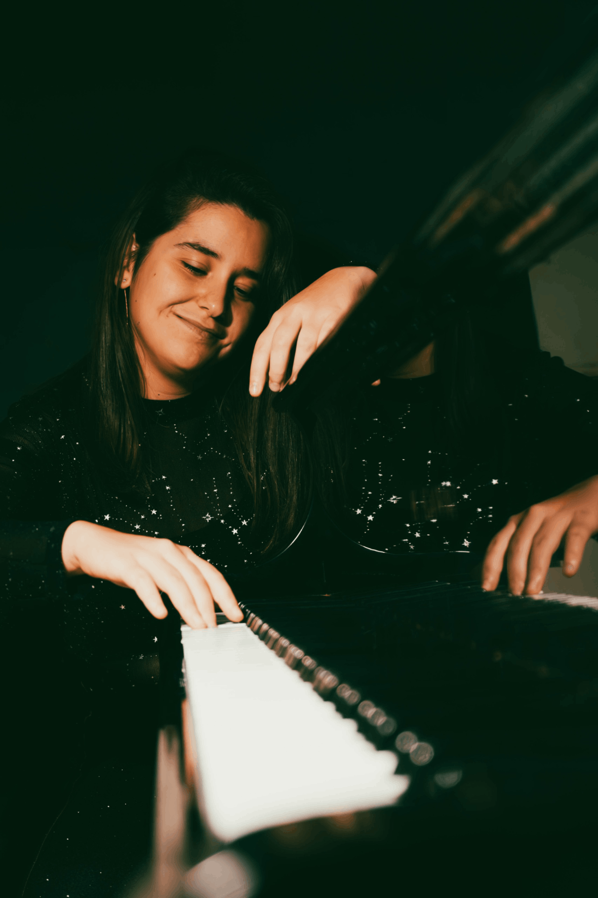

Free AI Website CreatorNascuda en un petit poble proper a Barcelona, la Laia és una pianista clàssica que combina una carrera com a intèrpret amb una gran passió per la composició i la improvisació. La seva activitat musical fusiona de manera natural la tradició amb la creativitat.
Laia es va graduar al Conservatori Superior de Música del Liceu de Barcelona, on va estudiar piano amb Àlex Alguacil i música de cambra amb Emili Brugalla. Al llarg de la seva carrera, ha perfeccionat la seva tècnica en masterclasses amb pianistes de renom com Ya-Fei Chuang, Ian Jones, Danny Driver, Péter Nagy, Vasco Dantas, Congyu Wang, Stephanie Baer, Akiko Ebi, Ilya Maximov i Yejin Gil, entre d'altres. Però els seus interessos van més enllà de la música, ja que també té el Grauen Biologia i el Màster en Genètica i Genòmica per la Universitat de Barcelona; una combinació única d’interessos artístics i científics.
També, la seva carrera com a solista s'ha vist acompanyada per la seva devoció a la música de cambra. Amb el Trio Aqua, han tocat internacionalment i han participat en masterclasses de músics de prestigi com Adrian Brendel, Péter Nagy, Salvador Brotons, Luc-Marie Aguera i Jan Bjøranger. Les seves col·laboracions amb el violinista Jardiel Rodellas en concerts de música fusionada posen en relleu la seva versatilitat. Abans d'aquests esdeveniments, va obtenir el 3r premi al IX Concurs de Música de Cambra Higini Anglès (2013).
Tot plegat, ha portat a que la Laia hagi tocat en nombrosos escenaris icònics, tant com a solista com a músic de cambra: el Teatro das Figuras (Faro), l'Auditori del Tívoli (El Vendrell), el Jardí dels Tarongers (Barcelona), la Sala Parés (Barcelona), el Reial Cercle Artístic de Barcelona, el Nathan Milstein Hall (Estocolm), el Kleines Studio (Salzburg) i el Real Collegio (Lucca), entre d'altres. El 2024 va fer el seu debut orquestral amb l'Orquestra do Algarve, interpretant el Concert per a piano i orquestra de Chopin en mi menor sota la batuta de Joshua dos Santos.
Des de ben petita la Laia ha mostrat un gran interès per la composició musical, i algunes de les seves peces han estat premiades i estrenades. El 2023, la seva obra Like Water va guanyar el 2n premi al Leonardo4Music Competition i es va estrenar al BOZAR de Brussel·les. Aquell mateix any, seu arranjament de Les Dolces Festes va ser estrenada a Lisboa i al 2025, l'arranjament per a big band i cor de ONE (del musical A chorus line) al CSM del Liceu. Actualment està component per encàrreg la música per a un nou ballet. Guiada pel compositor Mike Ladouceur, la Laia continua explorant els límits de l'expressió musical.
A més, la improvisació musical ocupa un lloc central en l'art de la Laia, que ha après de pianistes reconeguts com Carles Marigó, Emilio Molina i Juan María Cisneros. També ha aprofundit en aquesta disciplina en l'àmbit de l'acompanyament de dansa, aprenent d'experts com Kim Helweg, Mariana Palacios, Alberto de Paz i Juanjo Ochoa. Actualment, treballa amb ballarins professionals al Centre d'Alt Rendiment de Dansa de Terrassa (PAR) i a l'IEA Oriol Martorell, on acompanya ballarins de dansa clàssica, contemporània i espanyola. La seva feina l’ha portat a actuar per mestres internacionals com Rodolfo Castellanos, Anael Martín, Ilya Jivoy, William Castro, Magalí Suárez, Jia Yong Sun, entre d’altres, el que destaca la seva capacitat per portar espontaneïtat i emoció a cada interpretació.
El 2025, la Laia llançarà el seu primer àlbum en solitari, Beyond the Score: Mozart & Chopin. Aquest projecte no només celebra les obres atemporals d'aquests compositors i la relació entre ambdós, sinó que també les reinventa a través de la improvisació, una pràctica habitual en aquests compositors, oferint una nova perspectiva de la música clàssica.
La Laia comparteix la seva passió per la música, la composició i la improvisació al seu canal de YouTube, convidant el públic a viure el seu procés creatiu i connectar amb la seva visió de la música.

Free AI Website Creator